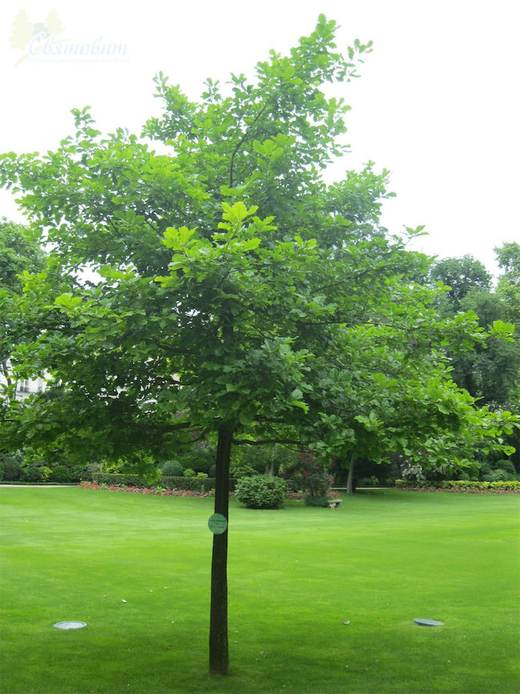
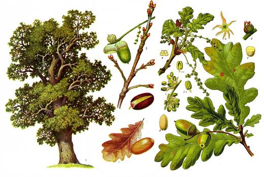
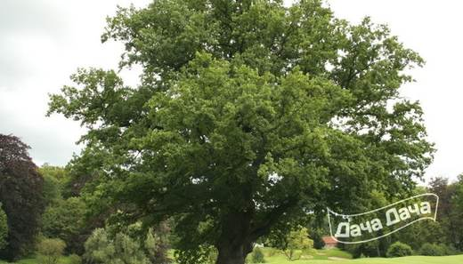
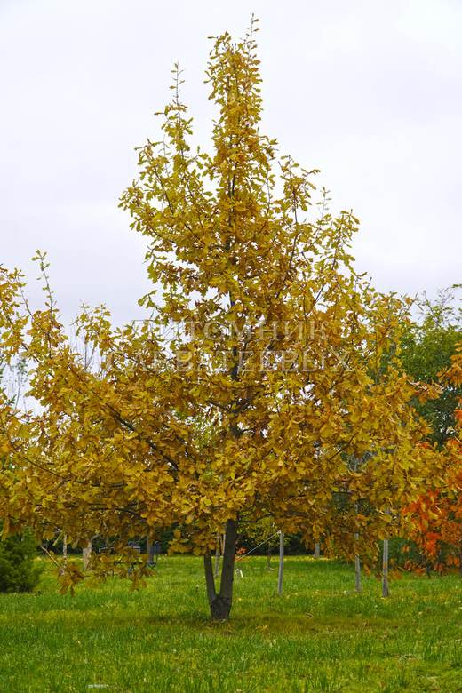

Будущий патриарх сада: сейчас — молодой дубок, через полвека — огромное дерево. Главное — сразу дать ему пространство и свет.




Клик по фото — полный размер. Фотографии иллюстрируют сорт/вид; собраны из открытых источников (питомники, сортовые каталоги, Википедия).
Дуб — дерево не одного садовода, а нескольких поколений. Молодой дубок растит мощную корневую систему и лишь потом начинает активно тянуться вверх: «дуб растит себя снизу». За 20–30 лет он превратится в раскидистое дерево с густой кроной и глубокой тенью.
Светолюбив: в тени и при загущении растёт плохо, крона формируется однобокой. Не любит переувлажнения, сильного ветра в молодом возрасте и очень кислых почв. При этом исключительно долговечен и зимостоек.
| Место | открытое, солнечное, с запасом 6–8 м во все стороны на перспективу |
| От построек/проводов | не ближе 6–8 м (корни и крона взрослого дерева мощные) |
| Посадка | весна предпочтительна; контейнерный саженец — весь сезон |
| Полив | регулярный в засуху первые 3–5 лет |
| Зимовка | первые годы — мульча, защита штамба |
Советы собраны из отзывов садоводов на форумах и из практики питомников; цитаты приведены по источникам ниже.